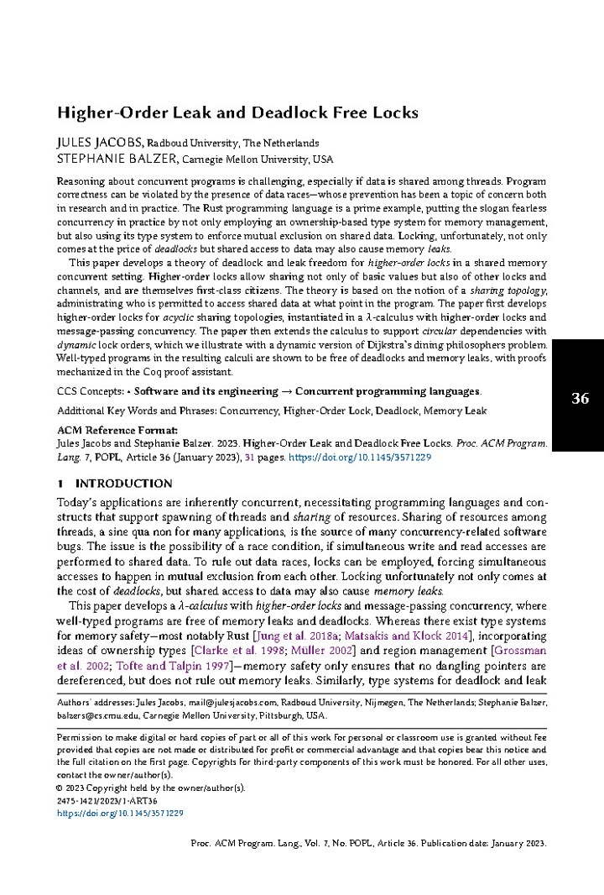

Rust's type system rules out data races, but programs with locks can still deadlock and leak memory. This paper develops a theory of deadlock and leak freedom for higher-order locks based on sharing topologies, first for acyclic sharing and then with dynamic lock orders. Well-typed programs in the resulting calculi are free of deadlocks and memory leaks, proved in Coq.

Read the paperReasoning about concurrent programs is challenging, especially if data is shared among threads. Program correctness can be violated by the presence of data races—whose prevention has been a topic of concern both in research and in practice. The Rust programming language is a prime example, putting the slogan fearless concurrency in practice by not only employing an ownership-based type system for memory management, but also using its type system to enforce mutual exclusion on shared data. Locking, unfortunately, not only comes at the price of deadlocks but shared access to data may also cause memory leaks.
This paper develops a theory of deadlock and leak freedom for higher-order locks in a shared memory concurrent setting. Higher-order locks allow sharing not only of basic values but also of other locks and channels, and are themselves first-class citizens. The theory is based on the notion of a sharing topology, administrating who is permitted to access shared data at what point in the program. The paper first develops higher-order locks for acyclic sharing topologies, instantiated in a λ-calculus with higher-order locks and message-passing concurrency. The paper then extends the calculus to support circular dependencies with dynamic lock orders, which we illustrate with a dynamic version of Dijkstra’s dining philosophers problem. Well-typed programs in the resulting calculi are shown to be free of deadlocks and memory leaks, with proofs mechanized in the Coq proof assistant.
@article{jacobs2023locks,
title = {Higher-Order Leak and Deadlock Free Locks},
volume = {7},
ISSN = {2475-1421},
url = {https://doi.org/10.1145/3571229},
DOI = {10.1145/3571229},
number = {POPL},
journal = {Proceedings of the ACM on Programming Languages},
publisher = {Association for Computing Machinery (ACM)},
author = {Jacobs, Jules and Balzer, Stephanie},
year = {2023},
month = Jan,
pages = {1027--1057}
}